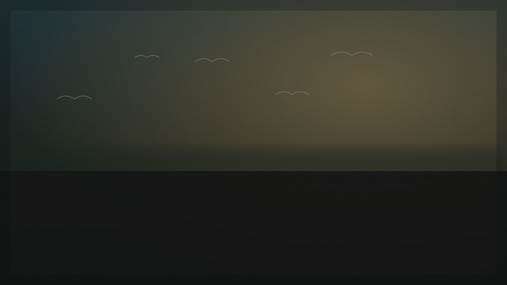

A Casa de Origem nasce em Belém do Pará com a proposta de apresentar obras que unem pintura, memória, paisagem e herança visual brasileira. Mais do que reunir quadros, a casa constrói uma curadoria de peças com presença, delicadeza e identidade — obras capazes de dialogar com ambientes sofisticados no Brasil e no exterior.
Trabalhamos com peças únicas e acervos limitados, pintadas à mão, acompanhadas de leitura curatorial e atendimento consultivo. Cada obra é tratada como parte de um acervo — não como um produto de prateleira.
Princípios da curadoria
A Amazônia e Belém como ponto de partida estético e simbólico.
Obras que ocupam o ambiente com silêncio e profundidade.
Linguagem clássica, atemporal, feita para durar no acervo.
Peças únicas ou de tiragem limitada, com certificado.
Acompanhamento consultivo do primeiro contato à entrega.
Regional na origem, universal na leitura.
